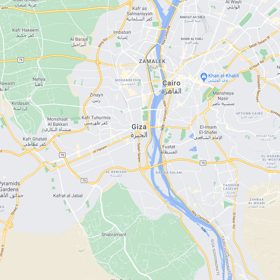
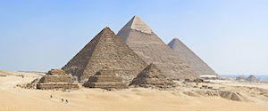
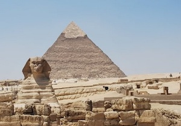

Location
Giza, Egypt
Giza is the second-largest city in Egypt after Cairo and fourth-largest city in Africa after Kinshasa, Lagos and Cairo. It is located on the west bank of the Nile, 4.9 km (3 mi) southwest of central Cairo, and is a core city of the Greater Cairo metropolis. Giza lies less than 30 km (18.64 mi) north of Memphis (Men-nefer), which was the capital city of the first unified Egyptian state from the days of the first pharaoh, Narmer.
Demographics
| 1947-1976 | +9.92 %/year |
| 1976-1986 | +4.21 %/year |
| 1986-1996 | +1.67 %/year |
| 1996-2006 | +3.53 %/year |
| 2006-2012 | +2.42 %/year |
Source: population.city
History of the Population
Giza has seen many changes over time. Changes in infrastructure during the different occupations of Egypt by various rulers, including the British in the 18th and early 20th century, focused on the construction of roads, streets, and buildings in the area. Giza is a thriving center of Egyptian culture and is quite heavily populated, with many facilities and buildings in the current area. Giza saw much attention in particular to its vast amount of ancient Egyptian monuments found on the Giza Plateau, and has astonished thousands of visitors and tourists over the years. Giza's infrastructure saw much attention from both the British government prior to the 1952 coup d'état, as well as the current Egyptian government due to the city's importance in tourism.
Culture and Attractions
Culture
Technically, Giza may not be an incorporated municipal unit, and therefore not a city at all. In a typical Egyptian fashion, there are two districts within the Governorate with the same name: a kism/qasm and associated markiz. Some 9 urban kisms of Giza Governorate form collectively a contiguous area of 98.4 km^2 on the Nile directly opposite Cairo, and recorded a preliminary count of 4,146,340 in 2017 census count, not including the Al-Ḥawāmidiyah kism separated by Giza markiz. It is unclear if the 9 urban kisms represent a single entity; the structure may be similar to that of 23 wards of Tokyo in that all local units are simply subordinate to the Prefecture of Tokyo without any intermediate municipal structure.
The city also hosts the first zoo on the entire African continent and one of the oldest in the Mediterranean region, the Giza Zoo. In addition, there are several parks, the most famous among them is Orman Park, which means "Forest Park" in the Turkish language.
Attractions

The Great Pyramid of Khufu (also known as the pyramid of Cheops, the king's Greek name) is the last remaining of the ancient Seven Wonders of the World and rises to a height of 481 feet (147 metres). The pyramid of Khafre is 471 feet tall(144 metres) and that of Menkaure rises to 213 feet (65 metres). The Great Sphinx sits on the eastern side of the plateau apart from the pyramids but it is thought it once was an important part of the pyramid complex which covered the area. The head of the Sphinx is believed by Egyptologists to be that of the king Khafre though others contend that represents Khufu. Further on, the great solar barge of Khufu, which is the oldest intact ship extant, was found buried in a pit near the Great Pyramid in 1954 CE. Dating from c.2500 BCE, the ship is 143 feet (43 metres) long and 19 feet (5.9 metres) wide. Near the Pyramid complex there are a number of smaller structures known as the Queens Pyramids. It is uncertain who was buried beneath these pyramids but evidence suggests they were the tombs of Hetepheres I (Khufu's mother), Meretites (Khufu's wife) and a later queen named Henutsen.
Economy
Driven by Tourism

Giza is one of the most important tourist cities in Egypt, located in southwest from Cairo, on the west bank of the Nile River, Giza is 85,153 km², tourists come to Giza from all over the world because it contains many Pharaonic monuments, It has one of the seven ancient wonders of the world "The Pyramids of Giza", Giza also contains many tourist attractions such as Zoser Step Pyramid, Dahshur, and Memphis.
Additionally, access to the city of Giza, which has its own governorate adjacent to the Governorate of Cairo, is dependent on the Cairo International Airport. Another local airport is found in Giza, called the Imbaba Airport, but recently the Egyptian government has decided to shut down the area and turn it into a cultural or an athletic area.
Source: cleopatraegypttours.com